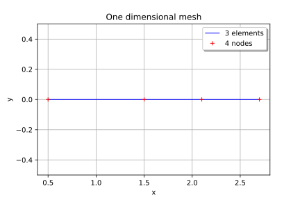
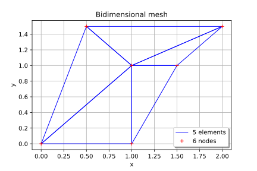
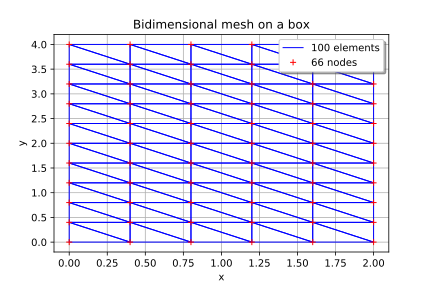
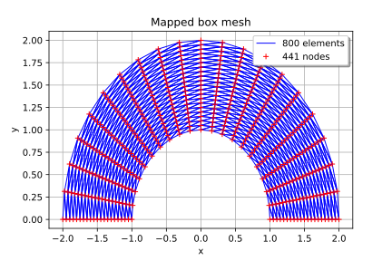
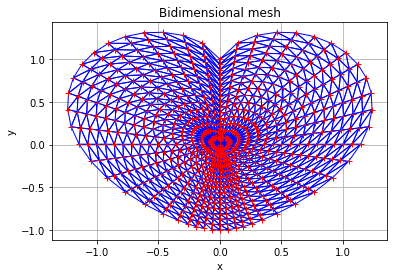

Creation of a mesh¶
In this example we will demonstrate how to create a mesh
 associated to a domain
associated to a domain
 .
.
A mesh is defined from vertices in and a topology that connects the vertices: the simplices. The simplex relies the vertices of index in . In dimension 1, a simplex is an interval ; in dimension 2, it is a triangle .
The library enables to easily create a mesh which is a box of dimension
 or regularly meshed in all its directions,
thanks to the object IntervalMesher.
or regularly meshed in all its directions,
thanks to the object IntervalMesher.
Consider a
multivariate stochastic process of dimension  , where
. The mesh is a
discretization of the domain .
, where
. The mesh is a
discretization of the domain .
In [1]:
from __future__ import print_function
import openturns as ot
import math as m
In [2]:
# Define a one dimensional mesh
vertices = [[0.5], [1.5], [2.1], [2.7]]
simplicies = [[0, 1], [1, 2], [2, 3]]
mesh1D = ot.Mesh(vertices, simplicies)
graph1 = mesh1D.draw()
graph1.setTitle('One dimensional mesh')
graph1
Out[2]:

In [3]:
# Define a bi dimensional mesh
vertices = [[0.0, 0.0], [1.0, 0.0], [1.0, 1.0], [1.5, 1.0], [2.0, 1.5], [0.5, 1.5]]
simplicies = [[0, 1, 2], [1, 2, 3], [2, 3, 4], [2, 4, 5], [0, 2, 5]]
mesh2D = ot.Mesh(vertices, simplicies)
graph2 = mesh2D.draw()
graph2.setTitle('Bidimensional mesh')
graph2.setLegendPosition('bottomright')
graph2
Out[3]:

In [4]:
# Case 2: Define a mesh wich is regularly meshed box
# in dimension 1 or 2
# Define the number of interval in each direction of the box
myIndices = [5, 10]
myMesher = ot.IntervalMesher(myIndices)
# Create the mesh of the box [0., 2.] * [0., 4.]
lowerBound=[0., 0.]
upperBound=[2., 4.]
myInterval = ot.Interval(lowerBound, upperBound)
myMeshBox = myMesher.build(myInterval)
mygraph3 = myMeshBox.draw()
mygraph3.setTitle('Bidimensional mesh on a box')
mygraph3
Out[4]:

In [10]:
# Case 3: Define a mesh wich is regularly meshed box
# and Transform it through a fuunction
myIndices = [20, 20]
mesher = ot.IntervalMesher(myIndices)
# r in [1., 2.] and theta in (0., pi]
lowerBound2=[1.0, 0.0]
upperBound2=[2.0, m.pi]
myInterval = ot.Interval(lowerBound2, upperBound2)
meshBox2 = mesher.build(myInterval)
# define the mapping function
f = ot.SymbolicFunction(['r', 'theta'], ['r*cos(theta)', 'r*sin(theta)'])
oldVertices = meshBox2.getVertices()
newVertices = f(oldVertices)
meshBox2.setVertices(newVertices)
graphMappedBox = meshBox2.draw()
graphMappedBox.setTitle('Mapped box mesh')
graphMappedBox
Out[10]:

In [6]:
# Create a mesh of dimension 2: the heart
def meshHeart(ntheta, nr):
# First, build the nodes
nodes = ot.Sample(0, 2)
nodes.add([0.0, 0.0])
for j in range(ntheta):
theta = (m.pi * j) / ntheta
if (abs(theta - 0.5 * m.pi) < 1e-10):
rho = 2.0
elif (abs(theta) < 1e-10) or (abs(theta-m.pi) < 1e-10):
rho = 0.0
else:
absTanTheta = abs(m.tan(theta))
rho = absTanTheta**(1.0 / absTanTheta) + m.sin(theta)
cosTheta = m.cos(theta)
sinTheta = m.sin(theta)
for k in range(nr):
tau = (k + 1.0) / nr
r = rho * tau
nodes.add([r * cosTheta, r * sinTheta - tau])
# Second, build the triangles
triangles = []
## First heart
for j in range(ntheta):
triangles.append([0, 1 + j * nr, 1 + ((j + 1) % ntheta)* nr])
# Other hearts
for j in range(ntheta):
for k in range(nr-1):
i0 = k + 1 + j * nr
i1 = k + 2 + j * nr
i2 = k + 2 + ((j + 1) % ntheta) * nr
i3 = k + 1 + ((j + 1) % ntheta) * nr
triangles.append([i0, i1, i2%(nr*ntheta)])
triangles.append([i0, i2, i3%(nr*ntheta)])
return ot.Mesh(nodes, triangles)
mesh4 = meshHeart(48, 16)
graphMesh = mesh4.draw()
graphMesh.setTitle('Bidimensional mesh')
graphMesh.setLegendPosition('')
graphMesh
